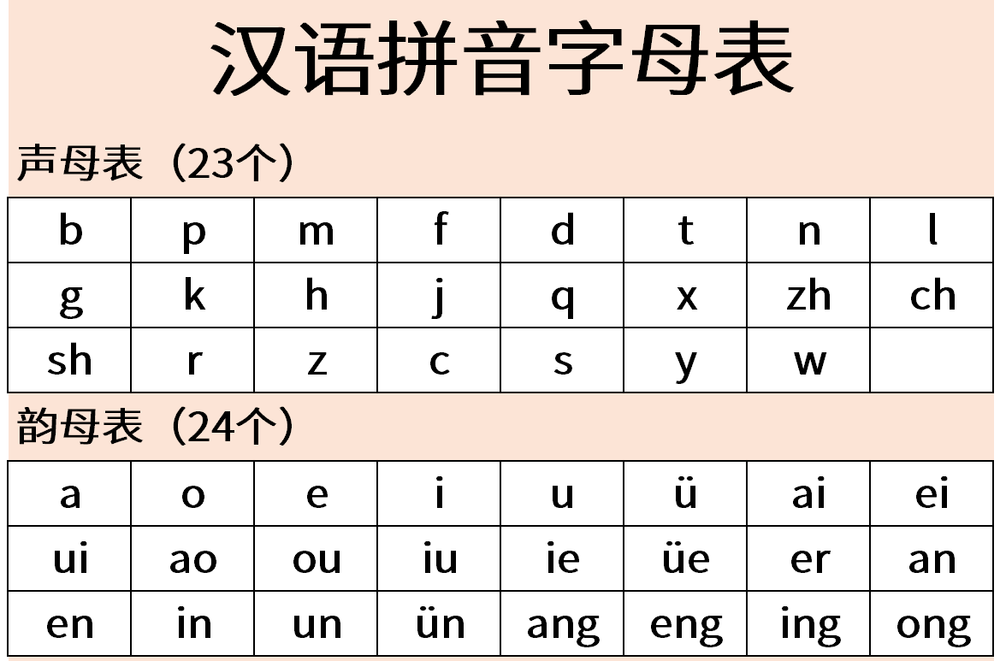
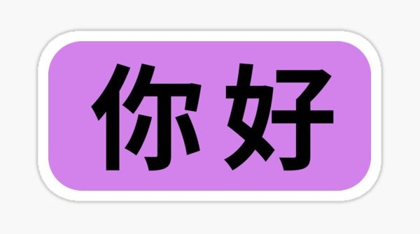

How to Speak Mandarin Chinese in 7.5 minutes
In this blog post, I will teach you how to speak Mandarin Chinese by say "Hello".
Introduction
To learn how to speack Mandarin Chinese, first we need to learn how to spell and read Mandarin Chinese. To do so we will have to know Pinyin, so we can get to know the sound system in Chinese. Then recognize and memorize Hanzi, which is to practice the charecters that represent meaning.
🌟 Pinyin

Similar to the English Language, Mandarin Chinese has 26 letters in the Alphabet, and each one could be spelled in 4 different ways and all these 4 ways hold a different meaning. It could be hard at first to say the exact sound but you will get it right after some practice.
Let's try and say "Hello". The word "Hello" in Mandarin Chinese consists of 3 syllables and 2 words "Nǐ" and "hǎo". Both "Nǐ hǎo" can be spelled as we say "knee" and "how" in English. Now try it with me "knee how". Amazing!!! You just said "Nǐ hǎo" in Mandarin Chinese.
🌟 Hanzi

Hanzi is the Chinese writing and charecters. Some of them is hard to draw while others are easy as a one small horizontal line which means number 1 in Mandarin Chinese. To continue on what have passed, "Nǐ" can be drawn as " 你 " and "hǎo" as " 好 ". Simple as easy
How to Spell
To fully verify that you know how to spell, read, and write " 你 好 ", check this video on Youtube.